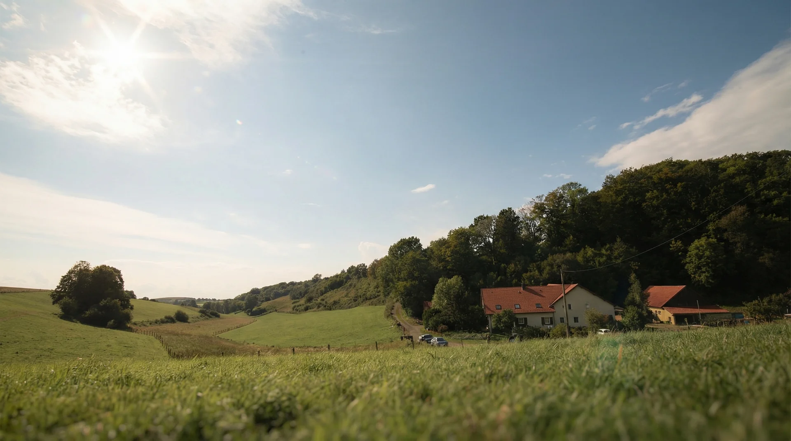
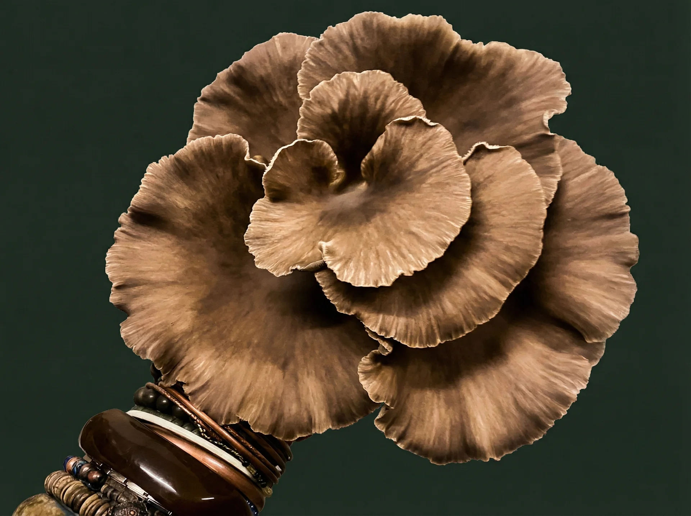
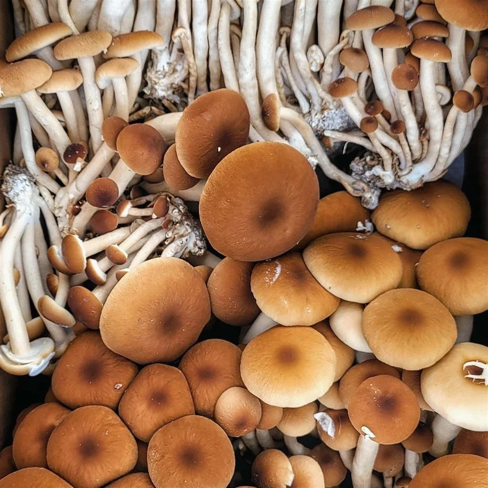
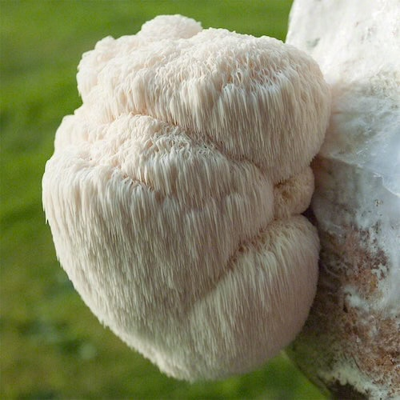
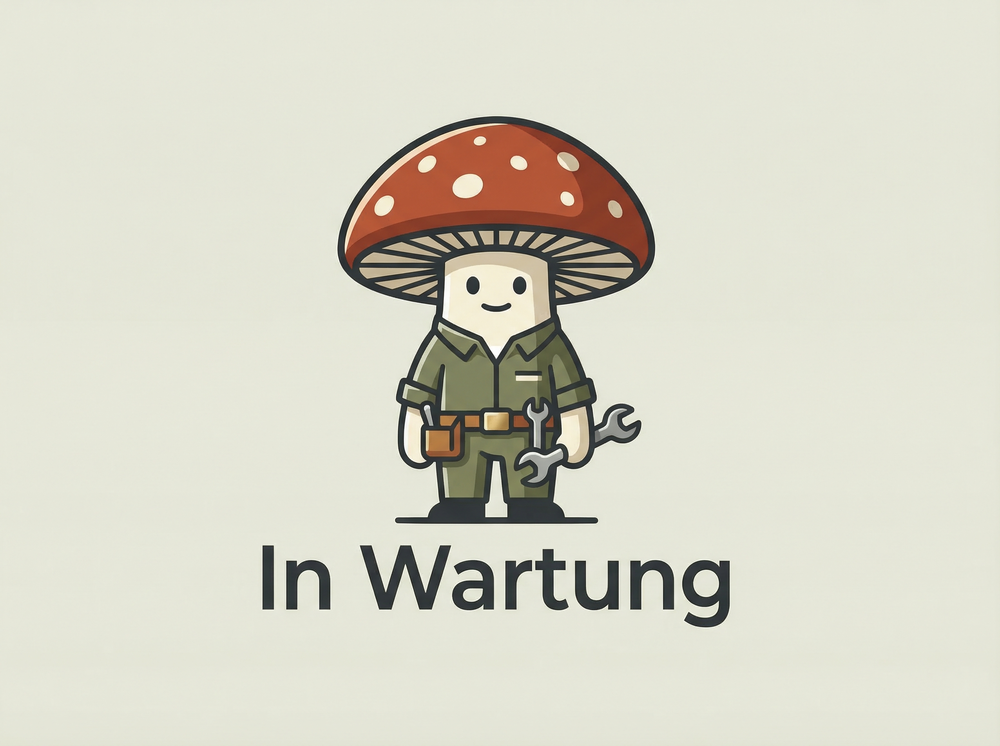
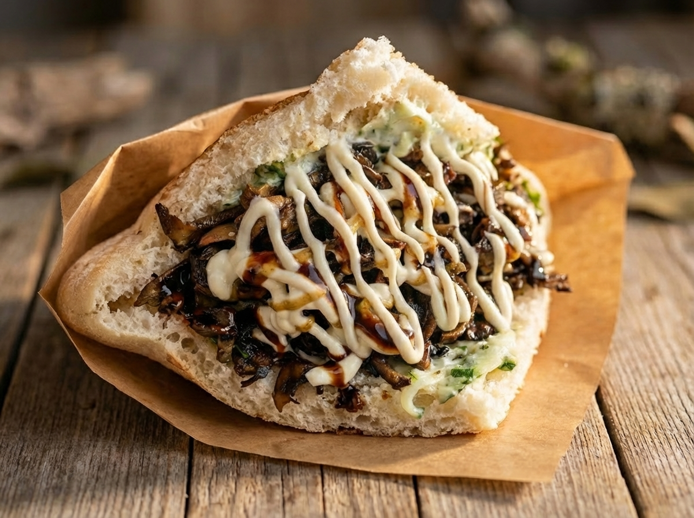
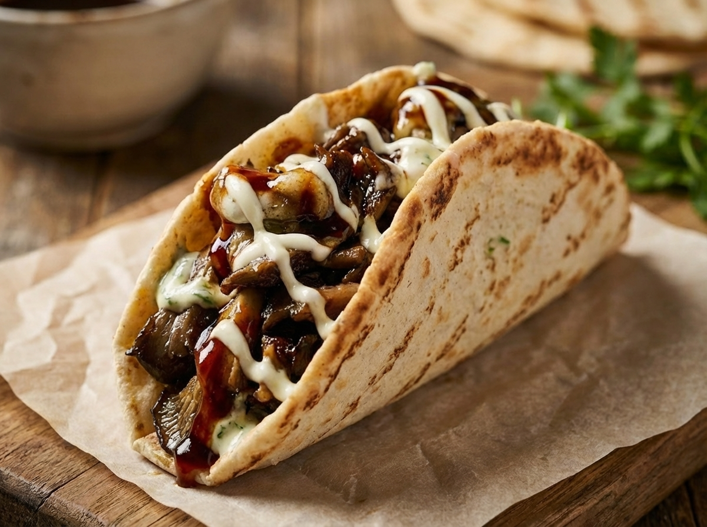

Regionale Dinkelspelzen als Nährboden
Wir verwenden regionale Dinkelspelzen als nachhaltiges Substrat – ein Nebenprodukt lokaler Landwirtschaft, das in unserem Kreislauf neues Leben findet und wertvolle Pilze hervorbringt.

Mehr als Bio. Eine Vision aus Myzel, Nachhaltigkeit und Geschmack.
Unsere Philosophie
Wir verwenden regionale Dinkelspelzen als nachhaltiges Substrat – ein Nebenprodukt lokaler Landwirtschaft, das in unserem Kreislauf neues Leben findet und wertvolle Pilze hervorbringt.
Von der Substrataufbereitung bis zur Kompostierung – unser System ist ein geschlossener Kreislauf. Kein Abfall, nur Transformation. Jeder Rest wird Ressource.
Minimaler Wasserverbrauch, keine Pestizide, energieeffiziente Klimasteuerung. Unsere Produktion respektiert natürliche Grenzen und maximiert biologische Effizienz.
Jeder Produktionsschritt wird dokumentiert und kontrolliert. Vom Substrat bis zur Ernte – wir machen Qualität sichtbar und nachvollziehbar für unsere Partner und Kunden.
Was du auf dem Teller hast, ist nicht der Pilz. Es ist sein Vermehrungskörper.
Der eigentliche Organismus lebt unsichtbar unter dem Boden — als Myzel. Ein Netz aus feinen weißen Fäden, kilometerweit, ohne Augen, ohne Nerven, ohne Gehirn. Und doch trifft es Entscheidungen.
Bäume reden über Pilze miteinander. Tauschen Zucker gegen Mineralien. Schicken Warnungen los, wenn ein Schädling kommt. Forscher nennen das Wood Wide Web — Millionen Jahre älter als jedes Internet, das wir je gebaut haben.
Schickt ein Pilz eine Spore in die Welt, erreicht sie über 90 km/h — und das innerhalb weniger Mikrosekunden. Eine der schnellsten Beschleunigungen, die in der Natur überhaupt vorkommt. Die Sporen steigen kilometerhoch in die Wolken und werden dort zu Kondensationskeimen. Pilze regnen sich selbst.
Manche Arten töten in zwei Stunden. Andere füttern ganze Wälder. Wieder andere — wie der Psilocybin-Pilz — werden an Universitäten wie Johns Hopkins erforscht, weil sie schwere Depressionen und Sterbensangst in Wochen lösen, an denen klassische Therapie jahrelang scheitert.
Wenn du bei uns einen Kastanienseitling kaufst und zu Hause in der Pfanne brätst — oder einen Magic Mushroll am Foodtruck nimmst — isst du keinen Beilagen-Pilz. Du isst ein Stück eines uralten, intelligenten Netzwerks, das wir hier in der Heide mit Sorgfalt wecken — und an dich weiterreichen.

Pleurotus pulmonarius – eine besondere Zuchtlinie des Austernpilzes, kultiviert unter kontrollierten Bedingungen für maximale Qualität und Geschmackskonsistenz.
Reich an pflanzlichem Protein, B-Vitaminen, Kalium und Antioxidantien. Kalorienarm, cholesterinfrei und eine exzellente natürliche Umami-Quelle.
Vom gegrillten Steak über cremige Risottos bis hin zu innovativem Streetfood – der Kastanienseitling überzeugt in jeder Küche.
Drei neue Zuchtlinien in Entwicklung – exklusiv kultiviert für Gourmet-Küche und Genießer.

Pleurotus eryngii · Schwarzer Kräuterseitling, samtschwarz & fleischig

Agrocybe aegerita · Nussig-süßlich

Hericium erinaceus · Maritim-fleischig, fast wie Hummer
Unsere Pilze werden zu unvergesslichen kulinarischen Erlebnissen. Jedes Gericht erzählt eine Geschichte von Qualität, Kreativität und pflanzlicher Kraft.

Gebratene Pilze, eingewickelt in Weizentortilla in frischem Crunch aus Eisberg & Rucola, Tomate, Gurke, Rotkohl, rote Zwiebeln, Aioli & dunkler Balsamico-Crema.

Saftige Kastanienseitlinge, alles, was ein guter Döner braucht plus hausgemachter Aioli & Cashew-Tzatziki.

Unsere Kastanienseitlinge, Salat, Tomate, Aioli & Feuer.
Knackiger Salat-Mix mit heißen Kastanienseitlingen, abgerundet mit hausgemachtem Tahin-Dressing aus reiner Sesampaste. Frisch trifft Umami.
Ein Ort für Gespräche.
Für Geschmack.
Für Begegnung.
Hunde sind willkommen.
„Im Gespräch wird die Wahrheit geboren."
– in Anlehnung an Platon
Wie beim Pilz liegt der größte Teil unter der Oberfläche.
Der Prozess beginnt im Reinraum. Aus ausgewählten Fruchtkörpern wird unter sterilen Bedingungen Gewebe entnommen und zu Reinkulturen aufgebaut. Über Petrischalen, Flüssigkulturen und Mutterkulturen entsteht so die Grundlage für alles Weitere.
In unserer Kulturbibliothek werden diese Kulturen gepflegt und weitergeführt. Ergänzt wird dieser Teil durch hofeigene Honiglösungen: Unsere Bienen sind direkt in den Prozess eingebunden und werden Teil des Nährraums, in dem sich die Kulturen entwickeln.
Die Kultur wird auf regionale Dinkelspelzen ausgebracht. Das Substrat wird vorbereitet, befeuchtet und beimpft, bevor das Myzel es vollständig durchwächst.
Darauf folgt ein gesteuerter Ablauf aus Durchwachsung und Fruchtung. Temperatur, Feuchtigkeit, Luftführung und Zeit müssen dabei genau aufeinander abgestimmt sein, damit ein stabiler und hochwertiger Fruchtkörper entsteht.
Der Pilz ist nicht der letzte Schritt, sondern die Grundlage für den nächsten.
In der Küche wird er weiterverarbeitet und in unsere Gerichte überführt. Hier wird aus dem, was gewachsen ist, etwas, das man direkt erleben kann.
Vier Schritte zum perfekten Pilz. Saftig, aromatisch, mit feiner Kruste und fast fleischähnlicher Konsistenz.
Die Kastanienseitlinge in Streifen schneiden – am besten quer zu den Lamellen. So entsteht die besonders schöne, fleischige Struktur.
Trick Pilz mit dem Stiel nach oben drehen und in gewünschte Streifen schneiden.
Pfanne sehr stark erhitzen — wie für ein Steak. Etwas Öl dazugeben, Pilze direkt in die heiße Pfanne legen. In Ruhe braten, nur gelegentlich wenden.
Achte auf Das natürliche Wasser tritt aus – die Pilze garen fast im eigenen Saft. Genau so soll es sein.
Sobald das Wasser verdampft ist, beginnen die Pilze zu bräunen. Noch etwas Öl zugeben und weiterbraten, bis sich eine schöne Kruste bildet. Anschließend mit Salz, Pfeffer und Gewürzen nach Wahl abschmecken.
Zum Abschluss mit etwas Weißwein oder weißem Balsamico ablöschen und kurz weiterbraten. Wer mag: eine Prise Chili zur Schärfe, ein Hauch Honig oder Agavendicksaft für leichte Karamellisierung – oder ein kleines Stück Butter für ein besonders saftiges, aromatisches Ergebnis.
So werden die Kastanienseitlinge wunderbar herzhaft, saftig und entwickeln eine angenehme, fast fleischähnliche Konsistenz.
Ein Blick hinter die Kulissen unseres Hofs – wo Natur, Präzision und Leidenschaft zu etwas Besonderem verschmelzen.
„Wir glauben, dass man schmecken kann, wie etwas gewachsen ist."— Pilzhof Dahler Heide
Jede Zusammenarbeit beginnt mit einer Entscheidung.
Hier finden Sie den passenden Einstieg.
Ein ästhetischer Foodtruck, pflanzliche Streetfood-Kreationen und ein professionelles Setup für Festivals, Firmenveranstaltungen und kulturelle Events.
Tour & Event Kooperation entdecken FÜR PROFIKÜCHENFrische Kastanienseitlinge direkt vom Hof – planbare Lieferung, konstante Qualität und persönliche Betreuung.
Gastronomie-Belieferung ansehen DIREKT VOM HOFErntefrische Kastanienseitlinge – während unserer Öffnungszeiten abholen oder unkompliziert über WhatsApp reservieren.
Frische Pilze entdecken